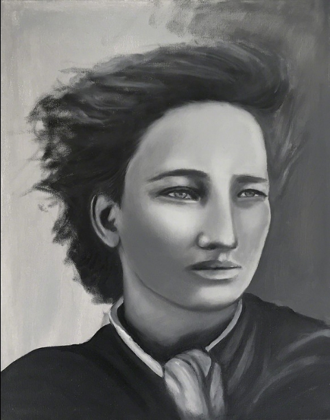
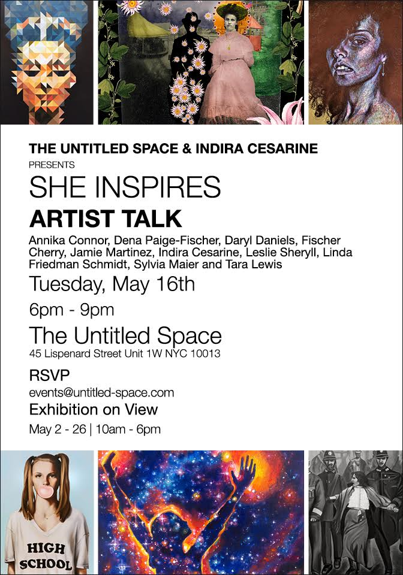
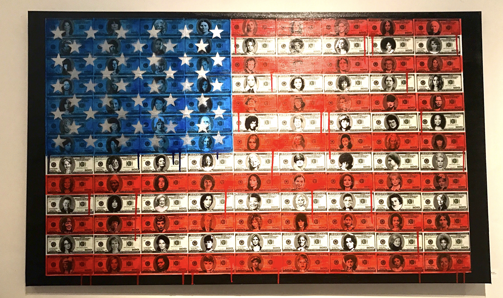
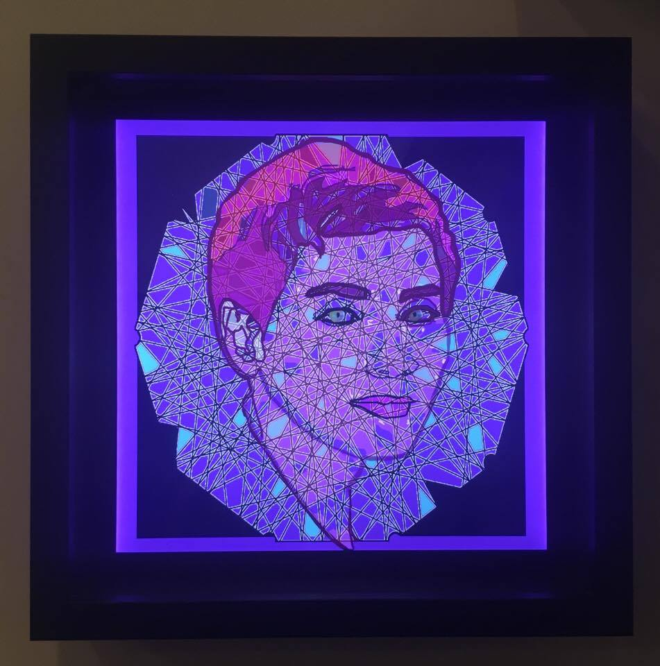

Welcome to the International Art Magazine.
-----------------------------------------------------------------
Thoughts on She Inspires at The Untitled Space
Written by Adam Aslan 5-5-17
Few issues seem as pressing today as women’s rights. The art exhibition “She Inspires,” which opened May 2 at the Untitled Space addresses this issue by presenting works that feature portraits of women that have been at the focal point of the fight for women’s equality acting as role models for women today and throughout history.
The choice to present portraits of famous women acts both as an inspiration and a source of education. While one hopes that most people would know Victoria Woodhull, who was the first woman to run for president of the United States and a leader of the suffragist movement, seeing the painting of her by Indira Cesarine titled, “My Name is Victoria Woodhull” acts as an inspiration to dig a bit deeper in to her life.

The exhibition runs from may 2nd to the 20th and will have events later in the month that includes a collaborative performance by dancer Katherine Crockett and artist Laura Weyl on May 9th and an artist talk Tuesday May 16th.

One highlight of the exhibit was “Nefertiti” by Jamie Martinez that presents an instantaneously powerful image of the Egyptian queen represented thru colored triangles, which have become a hallmark of the Martinez’s work.
“American Woman” by Cabell Molina really captured theme of inspiration thru her work that features 100 women on 100-dollar bills. The juxtaposition of this diverse set of women challenges the viewer to find correlations between the women positioned close to each other. For example, what similarities can be found between Harriet Tubman, who appears on a 100-dollar bill directly over Ellen Degeneres? On another 100-dollar bill we see Serena Williams positioned on top of Hillary Clinton. The viewer is forced to evaluate their feelings of these women in a unique manner involving mental
associations that are provoked from the art.
 One thing is certain about “She Inspires”, it makes you think and appreciate women from the present to antiquity, which is a lesson that only serves to better humanity. 